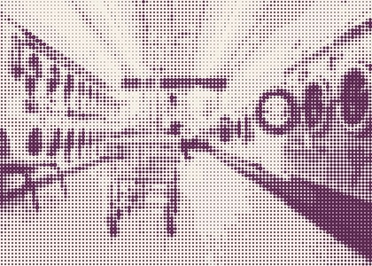
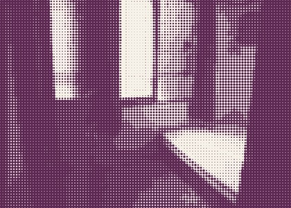
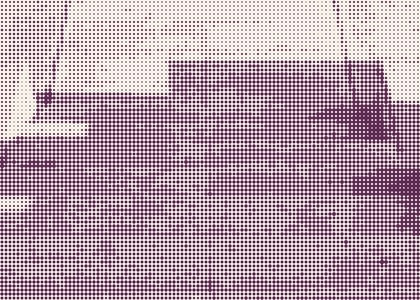
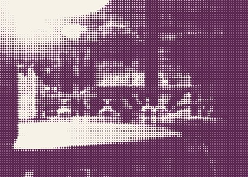

Photo essayrooms that held the momentfour pictures, few words
Places people prayed without planning to
None of these rooms look like it.
Ask people where they were the last time praying got real, and almost nobody names a building with a spire. They name rooms like these.




“I can never escape from your Spirit! I can never get away from your presence! If I go up to heaven, you are there; if I go down to the grave, you are there.” — Psalm 139:7–8, NLT
Photos: public domain · halftones: BS studio
Between Sundays · Photo essayIssue 001Page 44